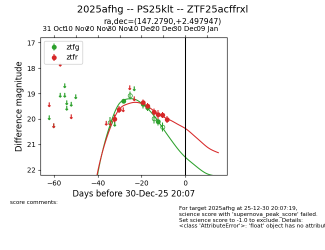
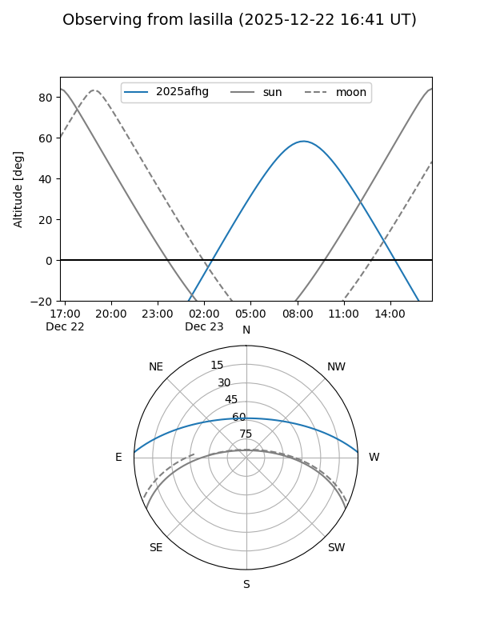
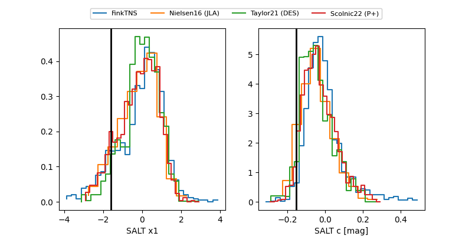

2025afhg
Target 2025afhg at 2025-12-30 21:38
Aliases and brokers:
FINK: fink-portal.org/ZTF25acffrxl
Lasair: lasair-ztf.lsst.ac.uk/objects/ZTF25acffrxl
ALeRCE: alerce.online/object/ZTF25acffrxl
TNS: wis-tns.org/object/2025afhg
YSE: ziggy.ucolick.org/yse/transient_detail/2025afhg
alt names
ZTF25acffrxl (ztf,fink_ztf)
2025afhg (tns,yse)
PS25klt (panstarrs)
Coordinates:
equatorial (ra, dec) = 147.2790,+2.49795
equatorial (HMS+DMS) = 09:49:06.96,+02:29:52.61
galactic (l, b) = (234.3608,+39.95532)
Flags:
Photometry:
last ztfg=20.10, ztfr=20.02
4 ztfg, 8 ztfr detections
Lightcurve

Visibility


Additional plots
